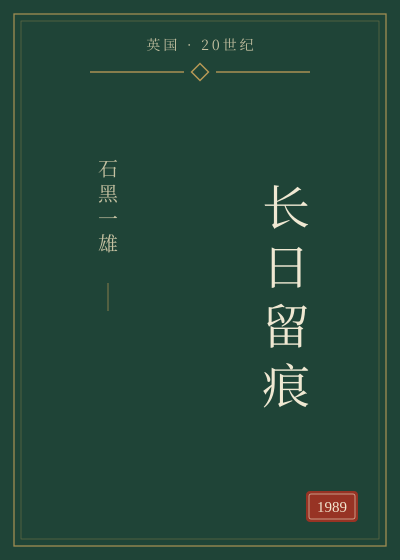

长日留痕
一、基本信息
| 作者 | 石黑一雄 |
|---|---|
| 成书/出版 | 1989年出版（Britannica：1989 Booker Prize） Kazuo Ishiguro — Encyclopaedia Britannica（百科全书） |
| 国别/地区 | 英国 |
| 时代 | 现当代 · 20世纪 |
| 体裁 | 长篇小说 |
| 语言 | 英语 |

《长日留痕》'职业与情感'结构图（主题·结构图）
二、创作背景
结构：1956年6天驾车的'旅途叙事'——管家史蒂文斯的回忆与' profesional dignity'（职业尊严）的辩护（通说）。
荣誉：1989年布克奖（Britannica：1989 Booker Prize for The Remains of the Day）。
三、内容脉络
旅途：管家史蒂文斯驾福特西行——为主人法拉戴先生'雇人'，实则赴见肯顿小姐（前同事，通说）。
回忆一：达林顿勋爵府1930s——勋爵亲德（绥靖）'幕后会议'——管家以'专业'无视政治（通说）。
回忆二：父亲之死与'职业高于私人'（通说）。
回忆三：肯顿小姐的婚姻与'错过的爱'——'心碎之时仍需维持'（通说细节待核）。
结局：晚霞码头——'傍晚是一天中最好的时光'（原文意，待核）；史蒂文斯'幽默地'承认'失去了'——回到职业（' dignity'的悲剧，通说）。
四、主要人物表
| 人物 | 身份 | 说明 |
|---|---|---|
| 史蒂文斯 | 达林顿府管家 | '职业尊严'至上的不可靠叙述者（Britannica：unreliable narrators——B130） |
| 肯顿小姐 | 前管家 | '本可以有不同生活'的遗憾（通说） |
| 达林顿勋爵 | 亲德贵族 | '绥靖'的'体面'——职业忠诚的政治代价（通说） |
| 法拉戴先生 | 新主人（美国人） | '笑话'的雇主（通说） |
五、主题与艺术特点
- '职业尊严'的代价：'为伟大的主人服务'即'为人类服务'的自我欺骗（通说）。
- 不可靠叙述：史蒂文斯的'克制'叙述暴露情感压抑（Britannica：unreliable narrators）。
- '长日留痕'：傍晚与余晖——老年、遗憾与和解（通说）。
- 艺术特点：第一人称'回旋'、对话的潜台词、英式幽默的'悲剧性'。
六、影响与评论
- Britannica（Ishiguro 条）：1989 Booker Prize for The Remains of the Day；2017诺奖。
Kazuo Ishiguro — Encyclopaedia Britannica（百科全书） - 1993年 Merchant Ivory 电影（Hopkins/Paltrow，通说待核）。
Kazuo Ishiguro — Encyclopaedia Britannica（百科全书） - 中译：冒国安译《长日留痕》（译林出版社，通说待核）。
Kazuo Ishiguro — Encyclopaedia Britannica（百科全书）
七、阅读建议
难点
- 叙述者的'自我辩护'——需要读者读出'未说出的'。
- 英国管家文化与1930s绥靖政治——注释。
- 冒国安译《长日留痕》（译林出版社，通说待核）：通行本。
- 英文本：Faber 版（通说待核）。
通读 → 精读'父亲之死'与'肯顿小姐告辞'段 → 对照电影（1993）。
八、待核实
- 1989年 Faber & Faber 出版细节待核。
- 冒国安译本信息待核。
- 1993年电影（James Ivory 导演）细节待核。